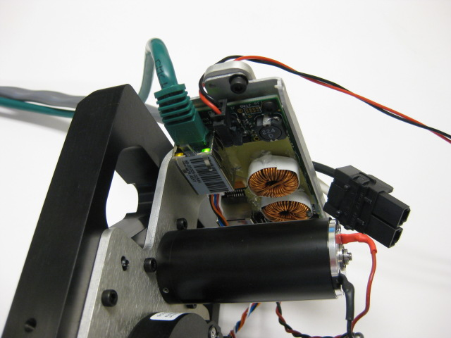

Rest the head pan assembly on its side. Lean it back on the MCB as shown in the picture. The side of the MCB with the barcode should be UP.
Plug the etherCAT cable from the test stand into the MCB. Plug it in to the side of the MCB with the barcode. Plug the micro-fit power cable into the MCB on the same side as the etherCAT cable.
This test will program and configure the MCB, and drive the head pan back and forth. Do not touch the gear during this test.
Press 'Continue' to proceed.